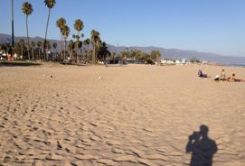

Back to normal... kind of.

Europe quick look
I’m now back in SB after a very short trip back to Europe last week. I was going to the last ELIXIR school in Leiden which was the last but one meeting left over from my PhD contract in Heidelberg. I was kind of crazy traveling 2x24 hours for a meeting that lasted a day and a half. But that being said it was actually really interesting from an observational point of view - know I knoe how to apply for and reduce data from JWST’s NIRSpec - or to be a bit more precise; they presented the state of the art of the software as it looks now approximately 6 years before launch. But at least I know who to contact for more information.
I was kind of crazy traveling 2x24 hours for a meeting that lasted a day and a half. But that being said it was actually really interesting from an observational point of view - know I knoe how to apply for and reduce data from JWST’s NIRSpec - or to be a bit more precise; they presented the state of the art of the software as it looks now approximately 6 years before launch. But at least I know who to contact for more information.
Besides the meeting going to Leiden was also a great opportunity to hang out with the other ELIXIR early stage researchers (as they like to call us). Always good to hang out with you guys. Looking forward to see you in November.
I got back friday evening without any delays and just in time to go to bed so I didn’t have to fight to stay awake. Hence, I also escaped basically all signs of jet lag this time and could therefore enjoy the weekend here. The weather was prefect. According to todays Good Morning America on abc we have apparently had a late-summer heatwave the last couple of days. I wouldn’t no - I just enjoy the warmth. We had more than 30C and sun. But as they said this morning over the weekend we will start to feel the autumn again with only 70 degrees fahrenheit... but hey that’s still above 20C :D It still pretty surreal to be here.

I have now also ordered internet. If nothing goes wrong I should be up and running at home tomorrow. I have been borrowing my landlords wireless the last couple of weeks which has made it much easier, but still it’s gonna be nice to get back online at home. And while I was at it I ordered an oldschool tv antennae which should arrive Tomorrow. So if I’m lucky and it can catch NBC I can watch some NFL from home this weekend - fingers crossed.
I’m slowly getting up to speed at UCSB with the new stuff as well, so everything is actually falling into place and the everyday treadmill is slowly appearing. And for me who likes to plan that’s actually pretty nice... the only thing I need now is my wife to arrive. But in one week she should arrive if nothing goes wrong (knock on wood).
Cheers
K
Thursday, 4 October 2012